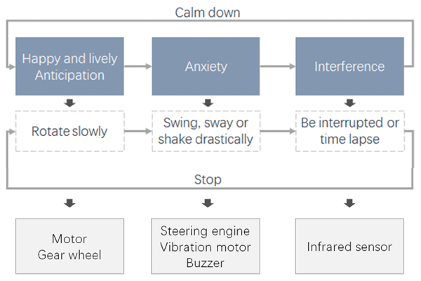
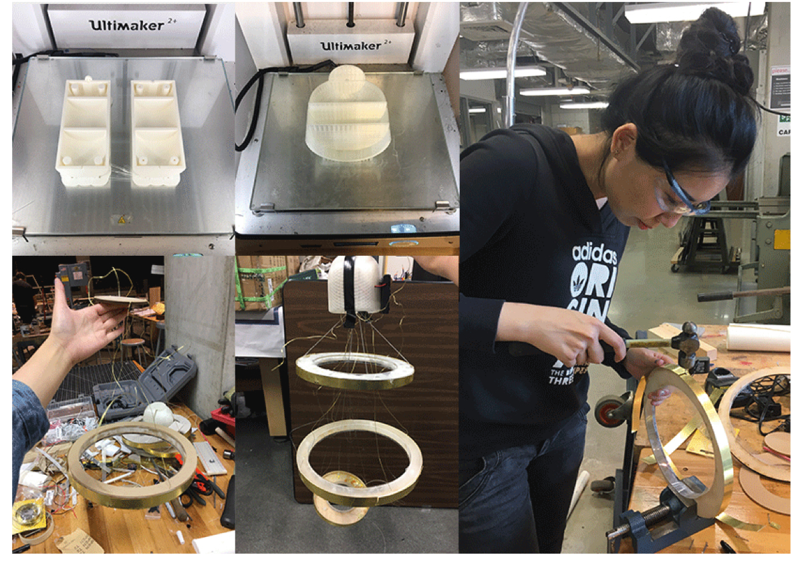

Overview
This design is an interactive art installation designed for experiencing the 4 phases of “Resfeber” at the same time playing with different interactions.
As the prompt of the Design Bootcamp, the word "Resfeber" inspired me to somehow combine the anxiety and anticipation before a new journey begins.

The Takeaways

Inspirations
Resfeber is a Swedish term that describes the feeling of the restless race of the traveler's heart before the journey begins. This is exactly the feeling I had when I studied aboard for the first time. I was nervous, and knew I was going to face more new challenges in a very short time.
Storyboard
Therefore, my inspriation started from "Emotion is a loop with some ups and downs."

Interaction and Feasibility
According to the Resfeber story, there are 3 phases in the cycle. Correspondingly, there 3 interactions audiences could play with this installation.
For the physical interaction prototyping, I chose to use the IR sensor as the trigger of external intervention to connect with motors and servos to generate the motions.



Form Factors and Crafting

As an art installation, I worked a lot on making the form design elegant, simple and minimalism. So I used brass plates and wires, clear ABS and yellow plastic decorations and cotton to convey the spirits of European and chill design.
Process
I laser-cut Acrylic into different sizes of circles and 3D modeled(Solidworks) and printed the box for the board, sensors, and servo. After testing the functions and adjusting again, I assembled them all together.
Final result


Challenges
A model that: hangs from the ceiling, not just a box-like design put on the table, rotates, made by new material and crafting methods.